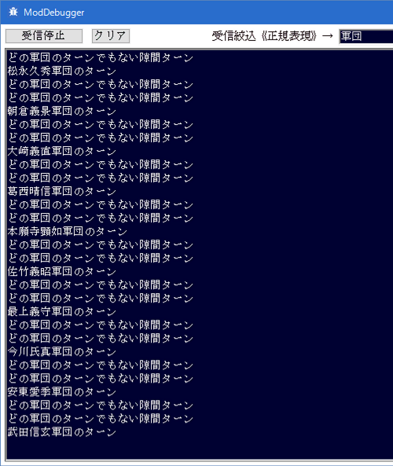

On_戦略_軍団ターン変更時
行動する軍団が変わったタイミングと、
どの軍団も行動しなくなったタイミングの
双方で呼ばれるイベントハンドラとなります。
注意点
「どの軍団も行動しなくなったタイミング」でもこのイベントハンドラが呼ばれるということをは重要です。
どの軍団も行動していない時には、通常、軍団番号に「0xFFFF」が入った状態で、
このイベントハンドラが呼ばれます。
使い処
各軍団ターンの頭で、このイベントハンドラが呼ばれるという特性は、
大名・軍団・武将・城など、いずれの値を更新するとしても、
とても都合の良いタイミングであるため、
値の取得と書き換え等は、ほとんどがこのイベントハンドラに集約されると思います。
実際に各種SDKの解説も、このイベントハンドラを用いたものが多くなっています。
使用例①
まずは、このイベントハンドラがどのような時に呼ばれるのか、
天翔記HDの画面とModDebuggerを両方見ながら確認しましょう。

使用例②
回ってきた軍団ターンが、プレイヤが直接担当している軍団なのか？
というのは最もよく利用する記述となることでしょう。
使用例③
この「On_戦略_軍団ターン変更時」が呼び出された瞬間は、
ダイアログや吹き出しなどが表示されていないことが保証されています。
このため、「独自のイベント」を記述するのに最も適した場所は、このイベントハンドラ内ということになります。
その他
ソースサンプルの多くは、「On_戦略_軍団ターン変更時」内で記述するサンプルとなっていますので、
それらを参考としてください。
「On_戦略_軍団ターン変更時」イベントハンドラについて、主な解説は以上となります。